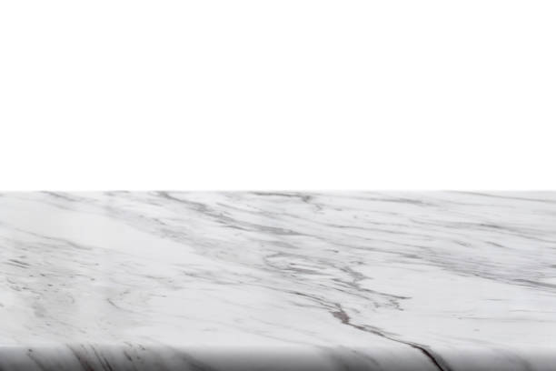

Chester Virginia
info@ohmykitchen.pro
Chester Virginia
info@ohmykitchen.pro

Enhance your Chester Virginia home with durable and stylish countertops. Wide range of materials, precise installations, and unmatched customer care for a seamless remodeling experience.
Click Here To Call Us (877) 848-1711If you’re looking for premium countertops in Chester Virginia our company specializes in providing high-quality, stylish, and durable solutions to elevate your home or business. Countertops are more than just functional surfaces – they are a key design element that adds value and sophistication to any space.
We offer a wide variety of countertop materials, including granite, quartz, marble, and laminate, catering to both traditional and modern tastes. Our team works closely with you to choose the perfect material, color, and finish to suit your unique style and requirements. Whether you’re updating your kitchen, remodeling a bathroom, or upgrading your commercial space, we deliver countertops that combine beauty with long-lasting performance.
What sets us apart is our commitment to customer satisfaction and precision craftsmanship. We use advanced technology to measure and fabricate countertops, ensuring a flawless fit every time. Our installation experts in Chester Virginia take care of every detail, from start to finish, to guarantee seamless results.
Transform your space with countertops that blend elegance, durability, and functionality. Contact us today to schedule a consultation and discover why we’re the trusted choice for countertop solutions in Chester Virginia . Let us help you turn your vision into reality!
Residential & commercial Countertops
Quality services at affordable prices
Immediate 24/ 7 emergency services


Choosing the right countertop for your kitchen or bathroom in Chester Virginia is essential for both aesthetics and functionality. With a wide variety of materials available, it's important to consider factors such as style, durability, maintenance, and budget to make the best choice for your home.
First, think about the style of your space. Do you prefer modern, traditional, or something in between? Materials like quartz and granite offer a sleek, sophisticated look, while marble is perfect for classic or luxurious spaces. For those seeking a natural, earthy vibe, wood or concrete countertops can create a warm and inviting feel.
Durability is another critical consideration. Kitchen countertops are often subject to spills, heat, and daily wear, so choosing a tough, resilient material like granite, quartz, or solid surface is ideal for high-traffic areas. On the other hand, bathroom countertops may not face the same level of use, allowing for more options such as marble or even reclaimed wood for a unique touch.
Maintenance is important too. Some materials, like granite and quartz, require minimal upkeep, while others like marble may need sealing and careful cleaning. If you're looking for low-maintenance countertops, quartz is an excellent choice.
Finally, budget plays a significant role. Granite and quartz may be pricier, while laminate or butcher block can offer great looks at a lower price point. By evaluating your specific needs, you can choose the perfect countertop that fits both your design vision and practical requirements in Chester Virginia .
Residential & commercial Countertops
Quality services at affordable prices
Immediate 24/ 7 emergency services
Enhance your home bar experience with our stylish and functional countertop solutions . A well-designed home bar needs beautiful countertops that not only serve a practical purpose but also reflect your personal style. Our team specializes in selecting and installing high-quality countertops tailored for home bars.
From trendy quartz and polished concrete to classic granite and elegant marble, we offer a diverse range of materials to choose from. We understand that each style brings unique benefits, such as durability or easy cleaning, and we’re here to help you find the perfect match for your home's aesthetics and your lifestyle.
Our installation process is meticulous, ensuring that every aspect of your countertops is precisely placed for both functionality and visual appeal. We also provide customization options, including edge designs and integrated features like drink coolers or cutting boards, to make your home bar more functional.
By selecting our countertops for your home bar, you’re investing in a space that’s not only beautiful but also enhances your entertaining experience. Enjoy the art of mixology in a well-designed area that embodies luxury and style.

For the environmentally conscious consumer, we offer a variety of eco-friendly countertop options . Our commitment to sustainability means providing beautiful surfaces that don't compromise the planet’s health.
Why choose our eco-friendly options? We offer a range of sustainable materials, such as recycled glass, bamboo, and reclaimed wood, which combine style with environmental responsibility. Our team is dedicated to educating our customers on the benefits of eco-friendly choices and ensuring you find the perfect fit for your home. With our expertise, you can create an elegant and sustainable space that reflects your commitment to the environment. Choose us to transform your home with eco-friendly countertops that make a positive impact!

When only the best will do, look to our luxury countertop installation service in Chester Virginia . We specialize in high-end materials, including exquisite granite, luxurious marble, and stunning quartzite. Our commitment to quality and craftsmanship ensures that your luxury countertops will not only enhance the beauty of your home but will also serve as a long-lasting investment.
Choosing us guarantees your luxury countertop project receives the attention and expertise it deserves. We work closely with you to select materials that reflect your style and complement your space, ensuring every aspect of the installation is handled with precision. Our team of skilled artisans has extensive experience with high-end materials, providing flawless finishes that will leave you in awe. Elevate your home with our luxury countertop installations in Chester Virginia where elegance meets expertise.

In commercial kitchens, durability and functionality are paramount. We provide high-quality countertop installation services tailored to commercial environments ensuring that your kitchen meets both aesthetic and practical needs.
Why choose our services for your commercial kitchen? We understand the unique requirements of commercial spaces, offering durable materials that withstand wear and tear. Our team is experienced in working with various businesses, from restaurants to catering facilities, ensuring compliance with health and safety regulations. We’ll work with your schedule to minimize downtime, delivering superior service without disruption to your operations. Trust us to equip your commercial kitchen with countertops designed for peak performance and longevity!

Elevate your retail space with our custom countertop installation services in Chester Virginia . Countertops in retail environments not only need to be functional but also need to attract customers and complement your brand's identity. Our team specializes in creating visually appealing and practical countertop solutions tailored to retail settings.
We offer a variety of materials that combine form with function, including laminate, solid surface, and concrete. Each material can be customized in terms of color, texture, and edge design, allowing you to create a unique atmosphere that resonates with your brand.
Our experienced installers ensure that each countertop fits perfectly within your space while adhering to the highest standards of quality and craftsmanship. By focusing on aesthetics and durability, we aim to enhance the overall shopping experience for your customers.
With our retail store countertop solutions, you’re making a valuable investment in your business's presentation and functionality. Trust us to help you create an inviting and stylish retail environment that draws in customers.
In the hospitality industry, the right countertops can significantly impact guest experience. Our hotel and restaurant countertop solutions focus on providing top-quality installations that combine aesthetics with functionality. We understand the need for durable and attractive surfaces in high-traffic settings, ensuring they meet both design and practical needs.
What sets us apart? We take pride in our ability to customize solutions based on your specific needs, whether you require elegant stone surfaces for a fine dining restaurant or robust laminate for casual settings. Our team of professionals has the experience to deliver outstanding results that enhance your establishment’s ambiance. Transform your hospitality space with our hotel and restaurant countertop solutions in Chester Virginia .

Create a professional and inviting workspace with our office countertop installation services . Countertops in office environments play a crucial role in functionality and aesthetics, which is why our team focuses on providing high-quality materials designed to enhance your office's appearance and usability.
We offer a variety of materials, including laminate, quartz, and solid surface options, ensuring that every surface is not just beautiful but also suited for daily use. Our expert team collaborates with you to design and install countertops that reflect your corporate identity while maximizing workspace efficiency.
Whether you need reception desks, meeting room tables, or break room surfaces, we provide tailored solutions that meet your specific requirements. We ensure a smooth installation process with minimal disruption to your daily operations, so you can focus on what you do best.
When you choose our office countertop installation, you’re investing in a professional image that fosters productivity and impresses clients. Trust us to deliver exceptional results that enhance your workspace.

In medical and laboratory environments, reliability and cleanliness are of utmost importance. Our countertops for medical and laboratory settings are designed to meet rigorous standards of hygiene while being durable enough to withstand heavy use. We offer a variety of surfaces that are non-porous, easy to clean, and resistant to chemicals and stains.
What makes our service exceptional? We focus on safety and compliance, ensuring our materials align with health standards and regulations. Our knowledgeable team understands the specific requirements of medical and laboratory settings, recommending countertops that maintain a sterile environment. Choose us for your medical and laboratory countertop needs in Chester Virginia and ensure a safe and efficient workspace for professionals and patients alike.
Years Experience
Expert Technicians
Satisfied Clients
Compleate Projects
When it comes to choosing the perfect countertops for your home or business in Chester Virginia ohmy kitchen stands out as the trusted leader. With years of experience and a passion for quality craftsmanship, we specialize in providing a wide variety of countertops to fit every style and budget. Whether you’re remodeling your kitchen or upgrading your bathroom, our team offers expert guidance and top-tier products that transform spaces.
Our extensive selection includes granite, quartz, marble, and more, each handpicked for durability, beauty, and functionality. At ohmy kitchen, we understand that your countertops are an investment, which is why we offer only the best materials designed to last for years while maintaining their stunning appearance.
Why settle for less when you can have the best? Our team is committed to providing personalized services, ensuring that every project reflects your unique preferences and needs. We handle every detail from design to installation, guaranteeing a seamless experience. Whether you're renovating your kitchen or bathroom, our knowledgeable experts will help you select the perfect countertop to match your vision.
ohmy kitchen offers competitive pricing, exceptional customer service, and timely delivery. We pride ourselves on creating long-lasting relationships with our customers in Chester Virginia . Choose ohmy kitchen today, and let us turn your countertop dreams into reality!
When it comes to durability and timeless beauty, granite countertops stand unmatched. Granite is a natural stone that not only enhances the aesthetic appeal of your kitchen or bathroom but also ensures longevity and resilience against wear and tear. our granite countertop installation service provides a seamless blend of functionality and style, making it a top choice for homeowners looking to elevate their spaces.
Choosing our services means partnering with experts who have extensive experience in granite countertop installation. Our team understands the nuances of working with natural stone, ensuring precision in every cut and placement. We source high-quality granite slabs from trusted suppliers to guarantee that you receive only the best material for your home. Each installation is customized to fit your unique kitchen or bathroom layout, reflecting your personal style and preferences.
Moreover, our commitment to customer satisfaction ensures that we guide you through the entire process, from selecting the right granite to the final installation. With us, you not only get a beautiful granite countertop but also a reliable and stress-free experience.
Embrace modern sophistication with our quartz countertop installation services . Known for their engineered strength and versatility, quartz countertops come in a vast range of colors and finishes, offering homeowners endless design possibilities. Unlike natural stones, quartz is non-porous, making it resistant to stains, scratches, and bacteria, thus ideal for busy kitchens and bathrooms.
By choosing our quartz countertop installation, you benefit from our skilled craftsmanship and attention to detail. Our team specializes in custom installations, ensuring your countertops fit perfectly within your space. We take pride in selecting the finest quartz materials, sourced from reputable manufacturers, guaranteeing exceptional quality and durability.
We know that every home is unique. That’s why we work closely with you to create a customized experience, tailored to your vision and needs. Our customer service is unparalleled – we’re here to answer your questions and provide guidance throughout the installation process. Experience luxury and functionality with our quartz countertops, designed to enhance your home’s aesthetics and increase its value.
The elegance of marble countertops transcends time, making them a luxurious addition to any home. Our marble countertop installation service brings this historic stone's beauty and sophistication directly to your kitchen or bathroom. Marble is synonymous with luxury, offering unique veining and colors that create a stunning focal point in your space.
We understand that installing marble requires precision and expertise. Our dedicated team is trained in the intricacies of marble installation, ensuring a perfect fit and finish in your home. We select only the highest quality marble slabs, providing you with a wide range of choices to suit your style, from classic whites and grays to bold blacks and greens.
We also prioritize customer satisfaction, ensuring that your marble countertop not only meets your expectations but exceeds them. Our team is committed to ensuring a smooth installation process, treating your home with the utmost respect. With our marble countertops, you’ll enjoy a timeless piece that embodies luxury and grace, making your home truly remarkable.
For those seeking a warm, inviting kitchen atmosphere, butcher block countertops are an ideal choice. Made from hardwood strips bonded together, butcher block provides a durable and stylish surface perfect for food preparation and casual dining. Our butcher block countertop installation services in Chester Virginia offer a wide range of options, from traditional to modern styles that cater to your personal taste.
Our team specializes in seamless installations, ensuring that your butcher block is cut, fitted, and finished to perfection. We prioritize quality, using sustainably sourced woods that not only enhance your kitchen aesthetic but also offer longevity and resilience against wear and tear.
Choosing us means you are working with experts who are passionate about their craft. We believe in delivering exceptional results that truly reflect the character of our clients. Additionally, we provide guidance on maintenance and care, ensuring your butcher block countertops remain beautiful for years to come.
Laminate countertops are an excellent choice for budget-conscious homeowners looking for style without compromising on functionality. Available in an extensive range of colors and patterns, our laminate countertop installation services in Chester Virginia can simulate the look of more expensive materials without the associated costs.
Why choose our laminate countertop services? We focus on delivering high-quality materials along with a professional installation experience. Our team is well-versed in current laminate technology and design trends, ensuring your countertops are both stylish and up to date. Additionally, we provide maintenance advice to ensure your countertops maintain their beauty over time. Trust us to transform your space affordably with stunning laminate countertops!
Discover the seamless beauty of solid surface countertops with our expert installation services in Chester Virginia . Solid surface materials like Corian and LG Hi-Macs are designed to provide a modern, cohesive look in any kitchen or bathroom. Their non-porous nature makes them easy to clean and maintain, while also offering endless customization options.
Our team specializes in solid surface countertop installation, guaranteeing a perfect fit and impeccable craftsmanship. The flexibility of solid surface materials means we can create custom shapes and sizes to suit your needs, including integrated sinks and backsplashes that enhance the overall design.
We pride ourselves on our customer-centered approach, guiding you through the selection process to find the ideal style and color that complements your home. Not only do our solid surface countertops offer exceptional design possibilities, but they’re also durable and built to last. With proper care, they’ll maintain their beauty for years, making them a smart investment for your home.
For a modern and industrial-chic addition to your home, consider our concrete countertop installation service . Concrete countertops are becoming increasingly popular due to their unique aesthetic, versatility, and strength. They can be customized to any shape, color, or design, making them an ideal choice for creative homeowners and business owners looking to make a statement.
What can you expect from us? Our team of concrete experts is skilled in crafting and installing concrete countertops that meet the highest standards of quality. We take the time to understand your vision to create a bespoke product that speaks to your style and functionality needs. Whether you desire a rustic appeal or a sleek modern look, our concrete countertops can be transformed to fit your desired aesthetic. Trust our skilled professionals to bring your vision to life with our concrete countertop installation services in Chester Virginia .
For environmentally conscious homeowners, recycled glass countertops offer a unique blend of sustainability and style. With sparkling aesthetics and a commitment to eco-friendliness, these countertops can transform any space into a modern masterpiece. Our recycled glass countertop installation services in Chester Virginia are designed to provide a stunning, sustainable solution for your kitchen or bathroom.
Why choose our services? We specialize in high-quality recycled glass products that are both durable and visually appealing. Our team is dedicated to providing professional installation, ensuring that your new countertops are both functional and beautiful. Plus, we can guide you on the best design choices that complement your existing décor while showcasing your commitment to sustainability. Experience the perfect harmony of style and sensitivity to the environment with our stunning recycled glass countertops!
At the heart of any great kitchen or bathroom is a stunning countertop that reflects your personal style. Our custom countertop design and fabrication services in Chester Virginia allow homeowners to transform their dream design into reality. Whether you prefer granite, quartz, marble, or any other material, we help craft countertops that are uniquely yours.
Our process begins with a consultation to understand your vision and requirements. Our design specialists work with you to create unique solutions that blend functionality and aesthetics seamlessly. From concept to reality, our skilled fabricators handle every aspect, ensuring attention to detail and a perfect match to your design.
Choosing us for your custom countertop needs means opting for a dedicated partner in your design journey. Our reputation is built on our commitment to craftsmanship and client satisfaction. We utilize state-of-the-art technology and skilled artisans to deliver products that exceed expectations.
If your current countertops are outdated or damaged, it may be time for a replacement. Our countertop replacement services in Chester Virginia provide a streamlined approach to upgrading your space. We ensure minimal disruption while delivering high-quality installations that breathe new life into your kitchen or bathroom.
Our team works efficiently and carefully to remove your old countertops, taking care to preserve the integrity of your cabinets and other installations. From there, we guide you through selecting the perfect material, style, and color that aligns with your vision.
Why choose us for your countertop replacement needs? We understand that replacing countertops is a significant investment, and our goal is to ensure that the process is as hassle-free as possible. Our vast experience and commitment to quality allow us to deliver results that enhance your home’s value while providing functional and stylish surfaces.
Create the outdoor oasis of your dreams with our outdoor kitchen countertop installation services . Perfect for entertaining guests or enjoying family cookouts, outdoor countertops must withstand the elements while providing a stylish addition to your landscape.
Why are we the best choice for your outdoor kitchen? We specialize in materials designed for outdoor use, ensuring durability against weathering and wear. Our team can help you choose the right surface that matches your style and functional needs. We take pride in our installation expertise, guaranteeing a seamless and beautiful outdoor kitchen that becomes the center of social gatherings. Let us transform your outdoor space with stunning countertops that perfectly blend function and aesthetics!
The kitchen island often serves as the hub of the home, making it essential to choose the right countertop that balances functionality and style. Our kitchen island countertop installation services offer a variety of materials and designs personalized to meet your needs.
Why choose our team for your kitchen island? We offer an extensive selection of high-quality surfaces, from granite and quartz to butcher block and more. Our experienced designers will work with you to create a custom island that complements your kitchen's decor while maximizing your space. Additionally, our expert installation will ensure that your kitchen island is both practical and beautiful. Trust us to deliver a functional centerpiece to your home with our kitchen island countertop solutions!
Elevate the aesthetic and functionality of your bathroom with our expert bathroom countertop installation services . Choosing the right countertop can transform your bathroom into a luxurious retreat. From sleek granite and quartz to elegant marble and practical laminate, we offer a wide variety of materials to suit every style and budget.
Our experienced team understands the unique requirements of bathroom spaces, and we are committed to providing custom solutions that fit seamlessly into your design. We will work closely with you from the initial consultation to installation, ensuring the perfect fit and finish.
Not only do we prioritize aesthetics, but we also focus on durability and ease of maintenance. Bathroom countertops must withstand moisture and regular use, and we can recommend materials that meet these needs while also offering a stunning appearance.
From modern to traditional styles, our bathroom countertops can help create a space that reflects your personal taste. Trust us to deliver high-quality materials and impeccable craftsmanship, making your bathroom both functional and beautiful.
The edge design of your countertops can significantly impact the overall look and feel of your space. Our countertop edge design and customization services provide you with the opportunity to choose from a variety of edge styles that suit your taste.
Why choose us for your edge design? Our skilled team offers a wide range of customization options, from classic straight edges to more elaborate profiles like bullnose or waterfall designs. We understand that the finishing touches matter, and we pay close attention to detail to ensure your countertops look flawless. Whether you prefer a modern aesthetic or a traditional design, we can help you achieve your desired look while maintaining the highest quality. Let us assist you in creating unique and stunning edges that enhance your countertops!
If your countertops are showing signs of wear and tear, countertop resurfacing can breathe new life into them. Our countertop resurfacing service is a cost-effective way to renew the look of your existing surfaces without the need for costly replacements. We specialize in applying high-quality resurfacing materials that can restore the beauty and function of your countertops.
Our team of professionals uses advanced techniques and top-notch materials to ensure that your newly resurfaced countertops not only look great but are also durable and resistant to everyday wear. We offer a wide range of colors and finishes, allowing you to customize your countertops according to your style. With our countertop resurfacing you’ll experience a transformation that meets your needs and exceeds your expectations.
Damage to countertops can be an eyesore and affect the functionality of your home. Our countertop repair and restoration services are here to handle everything from minor scratches to significant damage, ensuring your surfaces look great again.
Why are we the best choice for your repair needs? Our skilled technicians understand how to assess the type of damage and apply the best methods for restoration. We work with various materials, including granite, quartz, and laminate, ensuring a careful and effective repair process. Our commitment to excellence means that we’ll restore your countertops efficiently and professionally while providing advice on future care. Don’t let damage detract from your home’s beauty—let us restore your countertops to their former glory!
Proper sealing and maintenance are essential for preserving the beauty and integrity of your stone countertops. Our sealing and maintenance services are designed to ensure your natural stone surfaces, such as granite or marble, remain stunning for years to come.
We use high-quality sealers that provide effective protection against stains and moisture, helping to maintain your countertops' appearance while extending their lifespan. Our trained technicians apply sealers with precision, ensuring that every inch of your surface is protected.
In addition to sealing, we offer comprehensive maintenance services, including cleaning and polishing that can refresh your countertops’ luster. We believe in educating our customers about the best practices for caring for stone surfaces to ensure they continue to look their best without compromising on performance.
By choosing our sealing and maintenance services, you’re making a smart investment in your home. Protect your countertops with our professional care, ensuring they remain beautiful and functional for years to come.
When it comes to choosing the perfect countertops for your kitchen or bathroom in Chester Virginia granite, quartz, and marble are among the most popular options. Each of these natural stone materials offers unique benefits that can enhance the functionality, aesthetics, and value of your home.
Granite Countertops are known for their durability and resistance to heat, stains, and scratches. This makes them ideal for high-traffic kitchens and bathrooms in Chester Virginia where longevity is essential. With a wide range of colors and patterns, granite adds a timeless, natural beauty to any space.
Quartz Countertops are engineered from crushed stone and resin, which makes them non-porous and highly resistant to stains and bacteria. They require minimal maintenance, making them a low-maintenance option for homeowners in Chester Virginia . Plus, with countless colors and designs available, quartz can match any design style, offering a modern and sleek look to your home.
Marble Countertops exude luxury and elegance. Known for their unique veining and smooth texture, marble adds sophistication to kitchens and bathrooms in Chester Virginia . While marble requires more maintenance due to its porous nature, the classic beauty it brings to your space is unmatched.
Whether you choose granite, quartz, or marble, these countertops can elevate your home's value and style. By selecting the right material for your needs, you'll enjoy beautiful, long-lasting surfaces in your Chester Virginia home.
Chester is a census-designated place (CDP) in Chesterfield County, Virginia, United States. Per the 2020 census, the population was 23,414.
Our professionals at OhMy Kitchen will assess your space, check for necessary preparations, and ensure your kitchen is ready for a smooth countertop installation .
Yes, certain materials, like quartz, are non-porous and resistant to mold and bacteria, ensuring a clean and healthy kitchen environment in Chester Virginia .
Typically, countertop installation by OhMy Kitchen takes 1-3 days, depending on the material and size of your project.
Many of our materials, such as granite and quartz, are highly heat resistant, making them perfect for cooking environments .
Marble countertops require a little extra care, such as regular sealing and avoiding acidic cleaners. Our team can guide you on proper care for your marble countertops in Chester Virginia .
For outdoor kitchens in Chester Virginia we recommend granite or quartzite due to their durability and resistance to the elements.
Yes, OhMy Kitchen offers countertop resurfacing services restoring your countertops to like-new condition without a full replacement.
At OhMy Kitchen, we offer a wide range of countertops, including granite, quartz, marble, and more, to suit every style and budget .
Yes, OhMy Kitchen offers countertop repair services in Chester Virginia helping restore your surfaces to their original condition.
Yes, OhMy Kitchen provides countertop samples for you to view in person at our showroom or by scheduling a visit .
Absolutely! OhMy Kitchen offers professional countertop installation services throughout Chester Virginia to ensure a perfect fit and finish.
Yes! OhMy Kitchen offers a variety of modern countertop styles, including sleek quartz and polished granite, perfect for contemporary homes .
We offer a warranty on all our countertops, ensuring peace of mind for our customers in Chester Virginia with long-lasting quality.
For small kitchens, lighter-colored materials like quartz or light granite can create an illusion of space and brightness, making them ideal for your Chester Virginia home.
If your countertop is damaged, contact OhMy Kitchen immediately, and we will help assess the damage and provide repair or replacement options.
Absolutely! At OhMy Kitchen, we can create custom-shaped countertops to fit your kitchen's unique layout and style .
Yes, OhMy Kitchen provides fully customizable countertops allowing you to select the perfect size, color, and finish for your kitchen.
The cost of countertops varies depending on the material, size, and complexity. Contact OhMy Kitchen for a personalized quote.
Our experts at OhMy Kitchen will help you choose the best material based on durability, aesthetics, and maintenance needs specific to your kitchen in Chester Virginia .
Yes, many of our countertop materials, such as quartz and granite, are highly resistant to stains, ensuring long-lasting beauty for your kitchen in Chester Virginia .
We offer a wide variety of colors, from classic whites and blacks to vibrant reds and blues, to suit every design preference .
Use cutting boards and trivets to prevent scratches. Our experts at OhMy Kitchen can recommend the best protective methods for your countertop material.
Maintenance varies by material, but regular cleaning with gentle products is recommended. Our team at OhMy Kitchen can provide specific care instructions for your countertops in Chester Virginia .
In some cases, installing new countertops over existing ones is possible. Our team at OhMy Kitchen can assess your current countertops and recommend the best approach for your project .
Yes, we offer sustainable and eco-friendly countertop options like recycled glass and bamboo to customers in Chester Virginia .
Yes, OhMy Kitchen offers countertop replacement services throughout Chester Virginia helping you upgrade to more durable or stylish options.
Yes, at OhMy Kitchen, we offer countertops in multiple thickness options, from sleek and modern thin profiles to thicker, more substantial options.
Simply contact OhMy Kitchen through our website or give us a call, and we will provide a detailed, no-obligation quote for your countertop project .
Yes, OhMy Kitchen offers free consultations where we discuss your countertop needs, style preferences, and budget.
Granite countertops offer durability, resistance to heat and scratches, and a timeless aesthetic, making them a top choice for homeowners .
The team at ohmy kitchen did an amazing job on our kitchen countertops. Their attention to detail and customer service were superb. I highly recommend them to anyone in Chester Virginia .
Profession
ohmy kitchen did a fantastic job installing my new countertops. The quality is unmatched, and the installation was flawless. Great service in Chester Virginia !
Profession
My kitchen looks amazing thanks to ohmy kitchen! The countertops are beautiful, and the installation process was smooth. I’m beyond pleased with the results in Chester Virginia !
Profession
Chester VA Countertops Pros
(877) 848-1711
info@ohmykitchen.pro
09.00 AM - 09.00 PM
09.00 AM - 12.00 PM